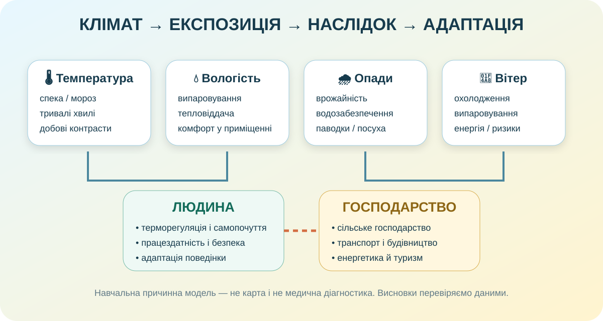

Що зміниться, якщо клімат зміниться на кілька градусів?
Запишіть початкову гіпотезу. Наприкінці Ви або захистите її, або спокійно поховаєте — наука переживе.

Чи змінюється клімат України з часом?
Відкрийте Кліматичний атлас УкрГМІ. Порівняйте кліматичну норму та сучасні зміни для температури або опадів. Атлас дозволяє працювати з середніми, максимальними й мінімальними температурами та опадами.
Кліматичний атлас УкрГМІ ↗Climate & Water УкрГМІ ↗Клімат як невидимий економічний фактор
Тепло, тривалість вегетації, опади й посухи впливають на культури, строки робіт і потребу в зрошенні.
Морози збільшують попит на опалення, спека — на охолодження; вітер і сонячність формують ресурс ВДЕ.
Туман, спека, сніг, ожеледиця й сильний вітер змінюють швидкість, безпеку та витрати.
Сезонність, сніговий покрив, спека й небезпечні явища визначають привабливість і тривалість сезону.
| Ситуація | Кліматичний чинник | Наслідок | Адаптація |
|---|---|---|---|
| Тривала літня посуха | |||
| Частіші хвилі спеки в місті | |||
| М’якіша зима з нестійким снігом |
Погода впливає на тіло — але не магічно
Всесвітня організація охорони здоров’я зазначає: тепловий стрес залежить не лише від температури, а й від вологості, вітру, теплового випромінювання, фізичного навантаження й одягу. Висока вологість у спеку ускладнює випаровування поту — отже, тілу важче віддавати тепло.
WHO: Heat and health ↗Заповніть причинну таблицю
| Елемент | Можливий вплив |
|---|---|
| Висока температура | |
| Висока вологість у спеку | |
| Сильний вітер у холод | |
| Різка зміна погоди |
Вимірюємо вологість повітря у класі
Прилад: гігрометр або цифровий термогігрометр. Розмістіть його не біля батареї, вікна чи прямого сонця; дайте показам стабілізуватися.
Не плутаємо
Відносна вологість — не «скільки води взагалі є у повітрі», а відношення фактичного вмісту водяної пари до максимально можливого за даної температури, виражене у відсотках.
Тому однакова кількість водяної пари при різній температурі може давати різну відносну вологість.
Збираємо закономірність
1. Кліматичні ресурси
Сонячна радіація, тепло, волога, вітер і тривалість теплого періоду можуть бути ресурсом для господарства.
2. Кліматичні ризики
Посухи, хвилі спеки, сильні морози, зливи, ожеледиця та інші явища створюють втрати лише через конкретну експозицію й уразливість.
3. Адаптація
Зміна строків робіт, сорти культур, зрошення, зелені зони, теплоізоляція, системи попередження та правила безпеки зменшують ризик.
Повертаємося до механізмів клімату
Дивіться не пасивно
Під час перегляду знайдіть один чинник, який може вплинути одночасно і на господарство, і на здоров’я/умови життя.
Відео використовується як коротке повторення механізмів; ключові висновки уроку мають спиратися на дані й дослідження вище.
10 балів: спочатку представтесь
Один висновок, але з доказами
Твердження: який прояв клімату найбільше впливає на життя або діяльність людей у вибраній Вами області?